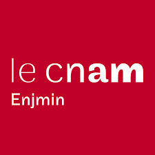
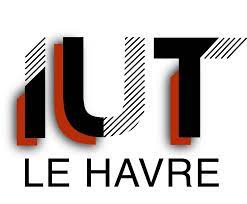

Portfolio Alexandre Kotowicz
Competences
Acceuil
Projets Personnels
A propos de moi :
Bac général (Mathématiques, numérique Sciences informatiques)
Pré-admis au CNAM (Recherche d'entreprise)

B.U.T Informatique du Havre (Parcours développement d'application)

Projets Personnels
Vous pouvez retrouver l'ensemble des mes projets professionels sur mon
Portfolio professionel
réalisé lors de ma pré-admission au CNAM